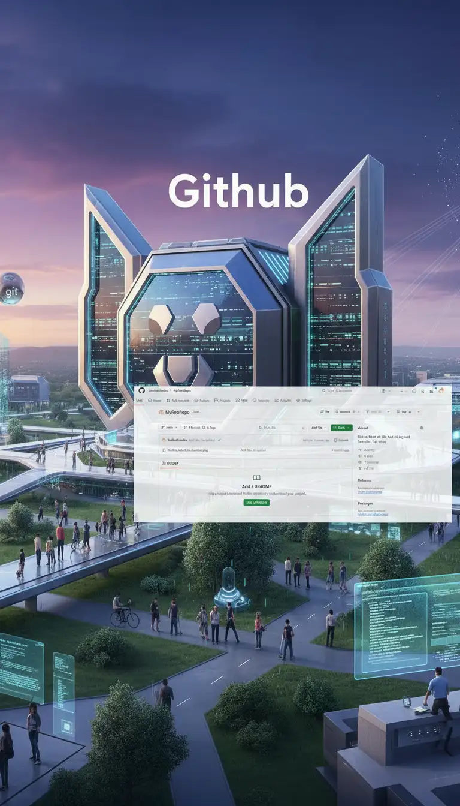
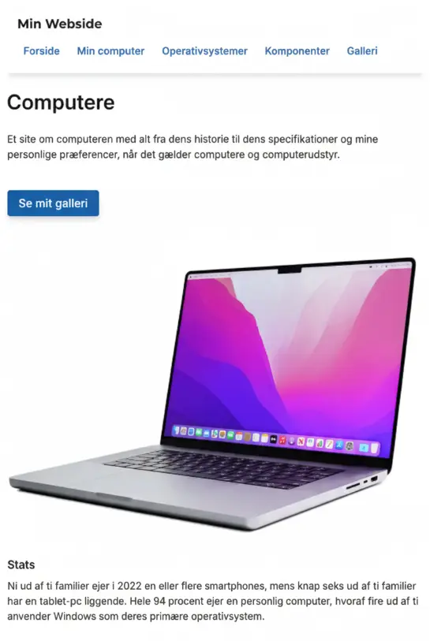
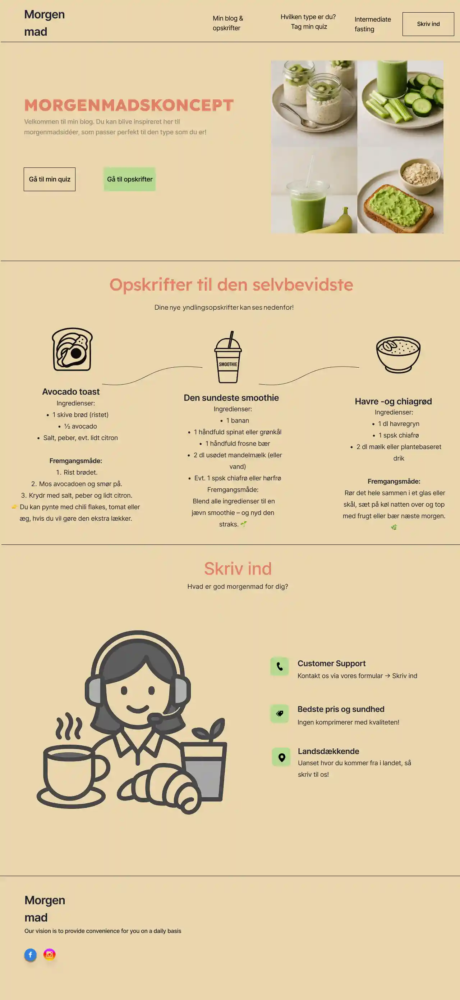
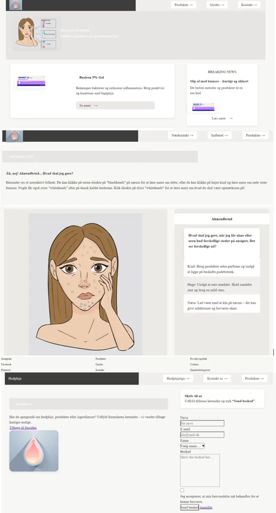
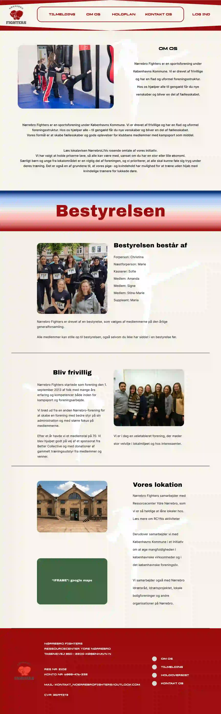

Portefølje
Udvalgte projekter
Introuge (Tema 1)
Løsning
Jeg opsatte mit første GitHub-repository med en korrekt mappestruktur, så projektet er let at forstå og eventuelt videreudvikle. Repo'et blev gjort offentligt og koblet til GitHub Pages under "Settings", så løsningen kan vises som en live-side direkte i browseren.
Proces
Introduktion til GitHub, versionsstyring og arbejdsflow. Jeg arbejdede med struktur, lære at committe via GitHub og jeg fik en forståelse for, hvordan projekter dokumenteres og afleveres så korrekt som muligt.
Læring
Jeg kan oprette, lokalt redigere og løbende vedligeholde et public GitHub-repository. Jeg kan ligetil deploye et site via GitHub Pages.

Studiestartsprøve (Tema 2)
Løsning
Jeg udviklede et responsivt website fra bunden ved hjælp af HTML og CSS i VS Code. Løsningen havde fokus på korrekt semantisk struktur, mobil-first tilgang og et overskueligt layout. Sitet blev opbygget med tydelig navigation, konsekvent typografi og en enkel visuel stil, der fungerede på både mobil og desktop. Projektet blev løbende redigeret og afleveret som et GitHub-repository.
Proces
Jeg startede med at være løsningsorienteret og arbejdede i VS Code ud fra wireframes og layout i PowerPoint. Herefter opsatte jeg en klar mappestruktur og skrev en semantisk HTML, som blev stylet med CSS. Undervejs testede jeg løbende i webbrowseren. Jeg arbejdede konsekvent med mobile-first, og derefter layout i desktop.
Læring
Jeg kan strukturere og opbygge websites med semantisk HTML. Jeg har lært at arbejde mobile-first og lave responsive layouts. Jeg forstår grundlæggende CSS og herunder layout i desktop version (media queries). Jeg kan selvstændigt opsætte og anvende GitHub til aflevering.

Emnesite (Tema 3)
Løsning
Jeg udviklede et emnesite baseret på UX-metoder og brugerindsigter. Løsningen tog udgangspunkt i research, brugerforståelse og test, hvilket resulterede i en digital prototype og et færdigt website med fokus på et nyt morgenmadskoncept med en klar navigation og en god brugeroplevelse.
Proces
Processen startede med research og analyse af målgruppe, brugertyper og personaer, hvor jeg havde fokus på den endelige forbrugers brugerbehov. Jeg arbejdede med brugerrejser, user stories og inspirationssøgning. Herefter udviklede jeg wireframes, moodboards, style tiles samt digiale prototyper i Figma, som blev testet via en likert test og 5-second tests. På baggrund af feedback itererede jeg designet, før jeg implementerede løsningen i HTML og CSS.
Læring
Jeg kan anvende UX-metoder som research, brugerrejser og tests. Jeg har lært at omsætte brugerindsigter til konkrete designbeslutninger. Jeg kan arbejde iterativt med digitale prototyper i Figma. Jeg forstår sammenhængen mellem UX, UI og frontend-udvikling.

Emergency Site (Tema 4)
Løsning
Jeg udviklede et interaktivt website med fokus på brugergrænsefladen ved hjælp af CSS, JavaScript og SVG-grafik. Løsningen indeholdt dynamiske UI-elementer såsom interaktioner, forms og visuelle effekter, der understøttede brugeroplevelsen. Designet blev udviklet med egne grafiske elementer fra Adobe Illustrator.
Proces
Jeg startede med at brainstorme og lave skitser samt visuelle koncepter, som blev videreudviklet til UI-elementer i Adobe Illustrator. Herefter implementerede jeg designet i HTML og CSS med fokus på custom properties, transitions og struktur. Jeg arbejdede med JavaScript til interaktiv funktionalitet og testede løbende funktionerne i webbrowseren. Koden blev organiseret i VS Code og dokumenteret i Figma.
Læring
Jeg kan udvikle interaktive brugergrænseflader med JavaScript. Jeg har lært at arbejde med SVG og vektorgrafik i Adobe Illustrator. Jeg forstår sammenhængen mellem design og funktionalitet. Jeg kan strukturere og optimere CSS med custom properties.

Virksomhedsprojekt (Tema 5)
Løsning
I gruppe udviklede vi et redesign af en virksomheds website med fokus på indholdsproduktion. Løsningen bestod af nyt visuelt udtryk, forbedret struktur, tekst og animationer. Det færdige website kombinerede design, indhold og frontend-udvikling i én samlet løsning.
Proces
Vi startede med analyse af virksomhedens eksisterende site og definerede målgruppe og budskab. Herefter planlagde vi indholdsproduktionen og producerede style tiles. Designet blev implementeret i HTML, CSS og JavaScript, og vi itererede løbende ud fra feedback og interne overvejelser.
Læring
Jeg kan planlægge og producere visuelt indhold til digitale platforme. Jeg forstår samspillet mellem indhold, design og brugeroplevelse. Jeg kan samarbejde i gruppe og bidrage til en samlet løsning.